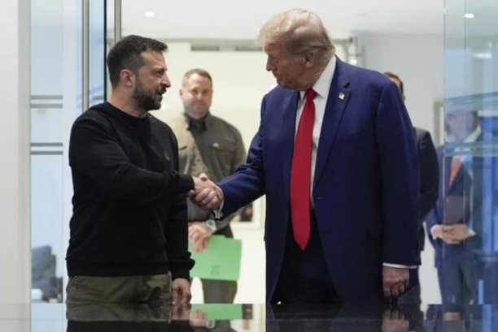
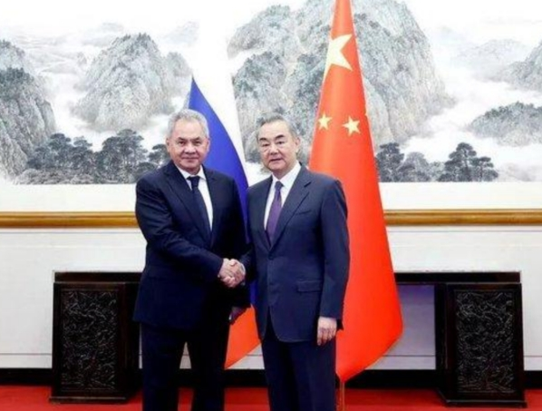

12月12日|来源：长安街知事 北京日报长安街知事新媒体官方账号

据环球网援引路透社报道，美国当选总统特朗普当地时间12日接受美国《时代》周刊采访时，批评乌克兰使用美制导弹攻击俄罗斯境内目标的行为，认为此举加剧了俄乌战事升级。
谈及俄乌冲突，特朗普受访时称，“发生的事情太疯狂了，这太疯狂了。我强烈反对向俄罗斯数百英里(纵深)发射导弹。我们为什么要这么做?这只会让这场战争升级，让局势变得更糟。”
据央视新闻报道，当地时间12月11日，俄罗斯国防部通报称，乌克兰武装力量利用6枚美制陆军战术导弹对位于罗斯托夫州塔甘罗格市的军用机场发动了袭击。
12日，俄罗斯总统新闻秘书佩斯科夫表示，俄罗斯一定会对乌克兰使用美国陆军战术导弹袭击塔甘罗格市军用机场做出回应。
今年11月，有知情人士表示美国总统拜登解除了对乌克兰使用美制武器袭击俄罗斯纵深目标的禁令，对此，泽连斯基回应说，“这样的事情不会提前宣布。导弹会用自己的方式发出声明。”
特朗普竞选时一直声称他将在上台后“24小时内”为乌克兰带来和平，在此次受访中，特朗普依然表示要尽快结束这场持续近三年的“战争”，但拒绝袒露具体的计划。
目前，试探特朗普结束战争的计划已成为乌克兰的“首要任务”。为获得特朗普的支持，泽连斯基已经与特朗普进行了多次电话会谈，乌克兰政府也已经在停战条件上作出了让步，但特朗普团队的态度似乎仍未改变。
当地时间12月7日下午，特朗普与法国总统马克龙和泽连斯基在法国总统府举行会晤，三人就俄乌冲突相关问题进行了讨论，有媒体披露这次会谈的细节。消息人士称，特朗普在会面中重申了他一贯的主张，即他希望俄乌双方立即停火，并通过谈判迅速结束战争。
12月16日|来源：一财网
刘江韵分析道:“弗里兰在特鲁多内阁中声望最高，她彻底辞去内阁工作，宣告特鲁多甚至不能笼络这位已经为其连续工作9年的重臣，其领导的政府面临着严重的信任危机。”
当地时间16日，加拿大副总理兼财政部长克里斯蒂娅·弗里兰(Chrystia Freeland)公开致信加拿大总理特鲁多并宣布辞职。她在信中表示，在过去的几周里，她和特鲁多“在加拿大前进的最佳道路上产生了分歧。”
这一决定宣布得颇为突然，因为就在几小时后，弗里兰将作为财政部长发表2023-2024财年的秋季经济报告。
广东外语外贸大学加拿大研究中心兼职研究员刘江韵在接受第一财经记者采访时表示:“弗里兰在特鲁多内阁中声望最高，她彻底辞去内阁工作，宣告特鲁多甚至不能笼络这位已经为其连续工作9年的重臣，其领导的政府面临着严重的信任危机。”
12月初，特鲁多政府宣布了一系列新措施，包括向每位年收入低于15万加元的加拿大劳动者发放250加元的支票，这预计将覆盖1870万人口并花费联邦政府46.8亿加元。但该措施未能在国会获得通过，另一项措施是节假日期间对必需品实行临时减税，预计将造成16亿加元的税收损失，该措施从本周六开始生效至明年2月中旬。
刘江韵表示，减税和派钱计划一方面是为了满足其它左翼政党关于提高社会福利的需求，另一方面是为了帮助选民抵抗通胀以争取民意支持。
但据称，弗里兰则一直对这两项政策感到担忧，认为在国家赤字不断增长的情况下，这两项政策在经济上是不明智的。在今年4月提交2024年联邦预算时，弗里兰强调了为了支撑“负责任的经济计划”将采取三项财政指导方针，其中之一就是将2023-24年赤字维持在401亿加元或以下。
然而16日发布的秋季经济报告显示，2023-2024财年的赤字达到619亿加元，高出目标200多亿。此外，该报告还表示要在未来六年新增211亿加元的支出，其中绝大部分将用于激励投资及工业生产。值得注意的是，加拿大政府还将斥资13亿加元用于边境安全计划，这被外界认为体现了对特朗普的承诺。
“简单来说，特鲁多与弗里兰当前的分歧是对短期政治收益与中期国家利益之间的取舍。”刘江韵表示，虽然弗里兰和特鲁多的直接分歧在于当前的财政支出方案，但深层的矛盾实际上是权力斗争，“二人之间的摩擦在今年9月就已经浮出水面，并且在特朗普上台之后迅速加剧。”
弗里兰在前述公开信中提到“美国新政府正在推行激进的经济民族主义政策，包括威胁征收25%的关税”并表示加拿大需要认真应对这一威胁。她还表示，要保持财政稳定以为即将到来的关税战做储备，并且避免“代价高昂的政治花招。”
今年9月，特鲁多任命加拿大央行前行长马克·卡尼(Mark Carney)担任经济增长特别工作组主席，刘江韵表示，这是直接服务于总理办公室的非政府职位，等于在弗里兰掌权的财政部以外另立了一个财权中心，而弗里兰则被削弱了权力。
刘江韵进一步分析，特朗普上台后，特鲁多要求卡尼与弗里兰合作商讨新的预算方案，以应对通胀问题和美国新政府可能带来的经济冲击。卡尼与弗里兰在预算问题上出现严重分歧，而特鲁多站在了卡尼的一边。这或是压倒弗里兰对特鲁多信任的最后一根稻草，直接导致她决定彻底离开特鲁多政府。
有消息人士称，特鲁多上周五告诉弗里兰，接替她财长职位的是前加拿大央行行长卡尼。但最后，接替弗里兰财政部长一职的是特鲁多的“密友”、公共安全部长多米尼克·勒布朗(Dominic LeBlanc)。上个月，特鲁多因关税威胁紧急赶往特朗普的海湖庄园与其共进晚餐时，负责处理边境安全的勒布朗也在席中。
刘江韵表示，若特鲁多希望让卡尼担任财长的消息属实，勒布朗最后“临危受命”则说明了卡尼不愿意接任财长职位，可能是对特鲁多继续执政的信心不足，更有消息称其可能有意与特鲁多竞争自由党党魁。
而关于新任财长勒布朗，刘江韵认为勒布朗虽然是特鲁多的“铁杆好友”，但并没有任何财经工作经验。因此他预计，勒布朗最多是一位政策执行者，而非政策制定者。他分析:“特鲁多可能会更直接地参与政策制定，而现时担任总理经济顾问的卡尼也会继续扮演重要的咨询角色。在新的内阁架构下，特鲁多的财政政策失去内部制衡，加拿大财政赤字恐将进一步攀升。”
目前兼任联邦公共安全部长和财政部长勒布朗在接受媒体采访时表示，他对避免对加拿大输美产品征收关税持乐观态度，并表示与“即将上任的美国政府的朋友进行沟通”是他需要“加倍努力”的一项工作。而对于引起争议的节日税收减免政策，勒布朗在采访中称这是为了暂时缓解生活成本压力。
弗里兰辞职后，至少七名自由党议员以及反对党领导人呼吁特鲁多辞职。自由党议员查德·柯林斯(ChadCollins)估计，希望他下台的党团成员人数在40到50人之间。
对此，刘江韵表示，现时并没有有效机制可以逼迫特鲁多立即解散政府，是否继续执政的主动权仍在掌握特鲁多手中。他解释称:“其一，自由党没有机制可以在大选前罢免党魁，只有当特鲁多输掉大选后才会触发辞职程序;其二，加拿大议会在12月17日已经进入休会期，反对党的不信任动议需要等到明年1月27日以后才能提出。”
已经执政九年的加拿大总理特鲁多近年来支持率持续下跌。一项民意调查显示，特鲁多的支持率已降至21.8%，位居第二。第一则是获得42.9%支持率的保守党领袖皮埃尔·波利耶夫雷(Pierre Poilievre)。
特鲁多此前与一位钢铁工人的对话也被视作其支持率持续下降的缩影。这位工人拒绝了特鲁多的握手并质问为何自己有稳定的工作却仍难以维持生计。“我认为你只会在这里待一年。”他对特鲁多说，“我一点也不相信你。”
近几个月来，已有6位内阁部长表示不会参与下一届选举，其中包括与弗里兰同日宣布辞职的住房部长肖恩·弗雷泽(Sean Fraser)。算上弗里兰和上个月因原住民血统主张和商业交易丑闻辞职的就业部长兰迪·博伊索诺(Randy Boissonnault)，特鲁多的内阁将有8名空缺。
外界预计，特鲁多将很快改组内阁。弗里兰则表示，她将继续担任自由党议员，并“致力于”在下次选举中再次参选。
据特鲁多的多位盟友表示，他正在反思领导能力的不足。在当地时间17日晚间举行的自由党议会会议结束仪式上，特鲁多提到了弗里兰的离职，并表示过去几天过得并不轻松。特鲁多说:“我们真的是一个大家庭。现在像大多数家庭一样，有时我们在节日期间也会吵架，但当然，像大多数家庭一样，我们会找到解决办法。”
12月16日|来源：新浪新闻

新浪新闻:陈先生，中国外长王毅和俄罗斯安全会议秘书绍伊古共同主持了新一轮战略安全磋商，为何引起世界各方关注?
特约评论员 陈冰:美国大选结果揭晓后，特朗普就像地震波，引起世界各地包括美国盟友的担忧、焦虑。在这种背景下，中俄新一轮战略安全磋商，似乎又让躁动的世界平静下来，发现这世界是多极的，并非美国一极，特朗普是美国的总统，而不是世界的总统。这就是中俄战略安全磋商引人注目的原因。中俄战略安全磋商，就共同关心的重大战略安全问题深入交换意见，中方说两国将秉持永久睦邻友好、全面战略协作、互利合作共赢，在涉及彼此核心关切问题上坚定相互支持，不断深化政治互信，打造出相邻大国关系的新范式，共同维护全球战略稳定。这里包含三层意思，一是中俄元首引领，是中俄关系高质量发展的最大政治优势和根本保障。二是不管外部挑战多么严峻，中俄两国战略合作是稳定的，不可动摇的;三是在中国的核心利益如台湾问题、南海问题上，俄罗斯坚定支持中方立场;而在俄罗斯的核心利益上，中方也将秉持公正公道原则，团结协作，共同维护世界格局的稳定。
总之一句话，中俄战略伙伴关系是牢不可破的，不会因为美国政府换届而发生变故。俄罗斯方面说话更加直率，绍伊古说举行中俄战略安全磋商，旨在抵抗美国及其附庸国实施的双重遏制政策，中俄通过外交政策协调，将构建平等、不可分割的欧亚架构。也就是说，不管美国如何调整政策，影响不了中俄间的务实合作和战略互惠。绍伊古说莫斯科与北京的关系是国际事务中的“主要稳定因素”，这与中国领导人在喀山金砖峰会上的提法是一致的，中方说中俄关系是百年来最重大变化中的“稳定力量”。中俄战略安全磋商的意义，就在于给世界打了一剂“清醒剂”，特朗普再让世界躁动，别忘了还有中俄在这里平衡。
新浪新闻:有美国媒体说特朗普和普京通了电话，要普京不要升级俄乌战事，但俄罗斯外交部澄清，那“纯属虚构”，是“假消息”，您怎么看这个乌龙?
特约评论员 陈冰:俄方的说法可信度更高。要是特朗普和普京通了电话，特朗普早就吹嘘起来了，用不着美国媒体用匿名信源来披露，更何况美国大选后对当选总统予以祝贺，是外交礼仪，美俄双方都不需要遮遮掩掩。这起“纯属虚构”的新闻，实际上有两个有意思的看点，一是为什么美国媒体要虚构?二是为什么在中俄战略安全磋商进行之际，俄罗斯要捅破窗户纸?
美国方面之所以要虚构“特普”通话，大概是要讹诈一下俄罗斯，看俄罗斯对特朗普解决乌克兰问题的想法反应如何?试探一下普京会不会买账。特朗普在大选中说他在一天时间内就能解决乌克兰危机，但没有提供具体细节，只是说他和普京关系很好。既然你说和普京关系好，那你当选普京该打个电话祝贺吧，结果没有。舆论认为，这不仅打了特朗普的脸，也打了摆乌龙的《华盛顿邮报》的脸。
至于说特朗普建议普京不要让俄乌战事升级，那代表了相当多西方人的担心，担心在未来拜登政府剩余的几十天内，俄军会快速打击乌克兰，让西方的援乌战略成为失败案例。另外就是俄罗斯揭穿谣言的时机，是在中俄进行战略安全磋商时揭穿的，向美西方强调了中俄关系的牢固。《华邮》的这次摆乌龙，倒是测出了乌克兰的立场，泽连斯基说“不反对”他们通电话，也就表明乌克兰是可以就停战问题展开和谈的。